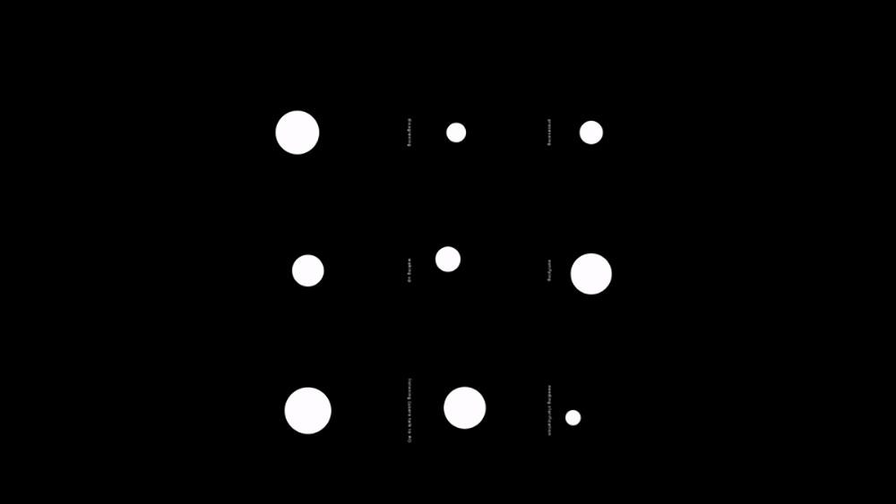
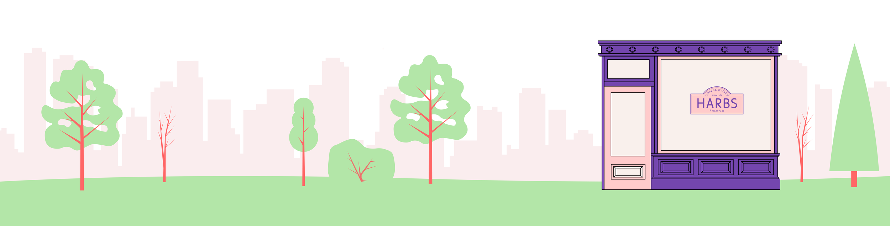

ollie
Conversational User Interface for Tripadvisor
Context:
Spring 2020
4 weeks
Group project
Team:
Mauro Magarelli
Mimi Jiao
Hyunjae Son
Skills:
Conversation Design
Interaction Design
Motion Graphic
Product Design
Overview:
Ollie is a conversational user interface designed for Tripadvisor, the world’s largest travel platform. Ollie helps to make planning a trip and travelling simpler and more pleasant for users based on their preferences.
Role:
Design Research
Concept Development
Visual Design
CUI State Prototyping
Motion Graphic

00. process overview

01. project brief
How might we design a conversational user interface for an existing business-to-consumer platform to improve user experience?
All 4 of us on the team are particularly interested in the topic of traveling, so we selected Tripadvisor as the platform we are designing for. We are interested in exploring ways in which a CUI can improve traveling experiences utilizing the existing dataset that it provides. To narrow down the scope for the time frame, we will be designing specifically for Tripadvisor’s mobile application.
02. research
Planning a trip with others is a lot of work and traveling requires dealing with a lot of information and sudden unexpected situations during the trip.
Our team started off the research process through several interviews to explore the common difficulties of traveling. Our interview results showed that the top 3 issues that people find the hardest to deal with for traveling are:
02. research
Tripadvisor, being the world’s largest travel platform, provides an extensive amount of information to users. The information ranges from finding things to do at a place to booking a flight. Our team wanted to see how we could pair this massive database with a conversational user interface to improve users’ travel experience. We conducted contextual interviews with think-aloud protocols to observe how people interact with Tripadvisor’s current mobile application, and to discover areas where users have trouble with.
Our research for Tripadvisor’s application yielded 3 results:
From the research, we identified 3 goals for the CUI experience that we will be designing:
1. Support for more efficient planning for customized trips that tailors to preferences of multiple users 2. Use real-time data to help users better navigate their traveling experience 3. Solve for difficulties and questions that arise during the trip
We created user personas based on the insights to to serve as guidance for our designs.
03. motion studies
To better understand the information that different motion communicates, we conducted a few motion exercises.
I started off with creating motions for only a simple white circle shape with the constraints of not changing its color, opacity, shape and not using any effects.

After the first simple motion exercise, my teammates and I created a set of 9 motion each illustrating potential states of the CUI (disagreeing, processing, alerting, waking up, notifying, AI speaking, AI listening, needing clarification, waiting) with less limitations on shape, colors, and motion. Then, we came together and mapped all the motions on to a graph of intensity vs. urgency.
04. ideation
We started brainstorming about how to implement a new system within Tripadvisor’s current platform to best solve the problems gathered from insights of our initial research.
Some of the questions that we considered are: When is it essential to visualize the status of virtual assistants? How can designers integrate verbal and visual languages when designing systems? How can designers effectively use motion for comunication? As we considered these questions and the common difficulties experienced with planning a trip and travelling, we defined the key features of the CUI and its main use cases.
05. user journey map
We did a quick user journey map to think about the entire experience from the initial planning stage to the actual experience of the trip.
06. cui state exploration
After defining the use cases that we are designing for, we began to explore the states of the conversational interface.
With knowledge gained from the previous experimentations of motion, we started prototyping the potential states. Based on the use cases, we developed 6 states for the cui (shown below). When discussing about the visuals of the AI, we also looked into Tripadvisor’s current branding style to understand how to best define the “personality” of the CUI. Tripadvisor was recently rebranded and embodies a cheerful and slightly playful identity. We used the brand’s new logo as a basis for the visual of the CUI.

07. storyboarding
We created our storyboard based on the main use cases.
08. visual style
We designed visual style of our video with colors and graphics based on the current visual style of Tripadvisor.
We went for a playful, friendly style for our visual assets to fit the friendly personality of Ollie and Tripadvisor’s current brand style.
